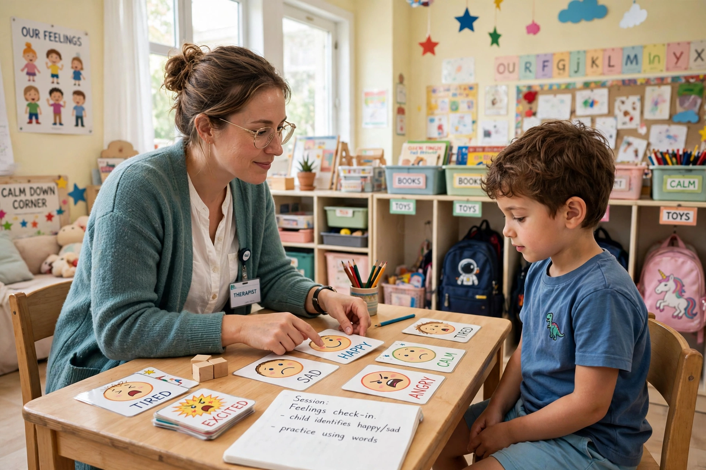

Applied behavior analysis (ABA) is a form of therapy and a branch of the science of behavior that systematically applies principles of learning theory — principally operant conditioning — to improve socially significant behaviors. It is the applied form of behavior analysis; the other two forms are radical behaviorism (the philosophy of the science) and the experimental analysis of behavior (basic experimental research).

ABA interventions are based on a functional assessment of the relationship between behavior and environment (antecedents and consequences). Core techniques include positive reinforcement, prompting and prompt fading, task analysis and chaining, discrete trial training (DTT), natural environment teaching, and pivotal response treatment. Progress is measured by direct, repeated observation of the target behavior. The field was founded as a discipline with the launch of the Journal of Applied Behavior Analysis in 1968 and Baer, Wolf, and Risley's defining article setting out its dimensions.
ABA is best known as an early intervention for children with autism spectrum disorder, following Ivar Lovaas's 1987 study reporting substantial gains for many children receiving intensive treatment. It is widely used in schools and clinics and is frequently covered by health insurance mandates. At the same time, ABA has been criticized — including by some autistic self-advocates — for historical use of aversives, for emphasizing normalization of behavior, and for goals set without the client's own priorities; contemporary practice standards stress assent, naturalistic methods, and socially meaningful goals. Professional practice in the United States is certified through the Behavior Analyst Certification Board (BCBA credential).
ABA methods are also applied in education, organizational behavior management, animal training, health and fitness coaching, and the treatment of substance use and dementia care.